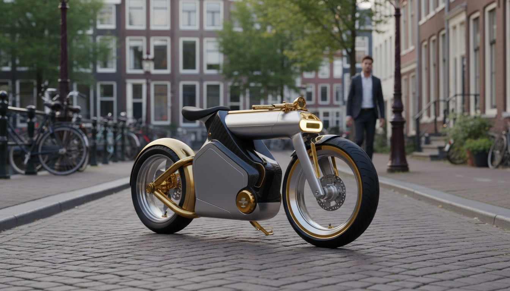
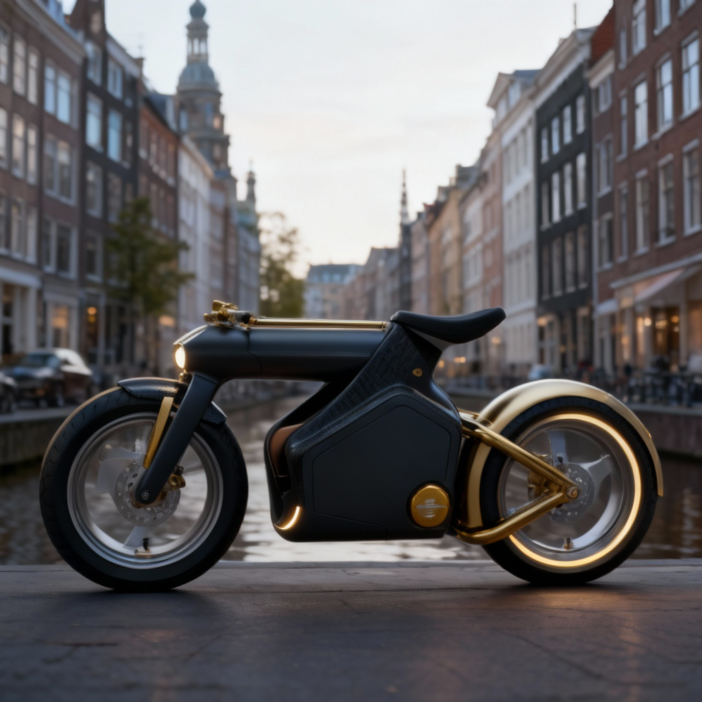

Luxury electric mobility for modern cities, refined hotels, and a planet-first future.

A Calm New Standard for Electric Travel
Ride JozEV blends minimal design, premium comfort, and a hybrid EV platform built for longevity.
Created for luxury hospitality and discerning riders, it delivers a smooth, quiet ride supported
by a circular battery ecosystem designed to eliminate waste.

Technology, Sustainability & Experience
Hybrid EV Architecture
Extended-range battery options, smooth acceleration, and modular electric design for maximum reliability.
Circular Battery Ecosystem
Battery second-life reuse, data-driven diagnostics, and responsible end-of-life processing.
Micro-Charging Stations
Low-grid-impact charging racks ideal for hotels, resorts, and sustainable tourism programs.
Luxury Ride Feel
Soft geometry, calm visual identity, and a premium riding experience tailored for hospitality fleets.
Policy Alignment with the Netherlands and North Holland
Ride JozEV integrates directly with regional and national objectives around sustainable mobility,
circular material flows, and energy transition. By focusing on low-impact electric transport and
battery lifecycle innovation, the platform supports multiple policy frameworks simultaneously.
Zero-Emission Urban Mobility: Supports municipal strategies to reduce noise and emissions in city centers and tourist zones.
Grid Congestion Mitigation: Micro-charging systems operate on low load, avoiding peak strain and enabling deployment in dense areas.
Circular Economy Targets: Diagnostic tracking, second-life battery repurposing, and material recovery contribute to regional circularity KPIs.
Sustainable Tourism Initiatives: Hotels, resorts, and tour operators gain tools to meet new environmental reporting requirements.
Climate Neutrality Goals: Lightweight electric mobility reduces transport emissions in alignment with Dutch and EU climate plans.
Innovation and Job Growth: Enables new roles in assembly, charging hardware development, battery recovery, and data analysis.
The JozEV platform is designed for compatibility with developing energy frameworks, subsidy schemes,
and circular mobility programs, making it suitable for pilot partnership with municipal or regional agencies.
Built for Hotels. Ready for Cities.
Designed for premium hospitality, tourism operators, and forward-thinking municipalities.
Pre-order invitations are open for partners ready to lead Europe’s next wave of circular mobility.